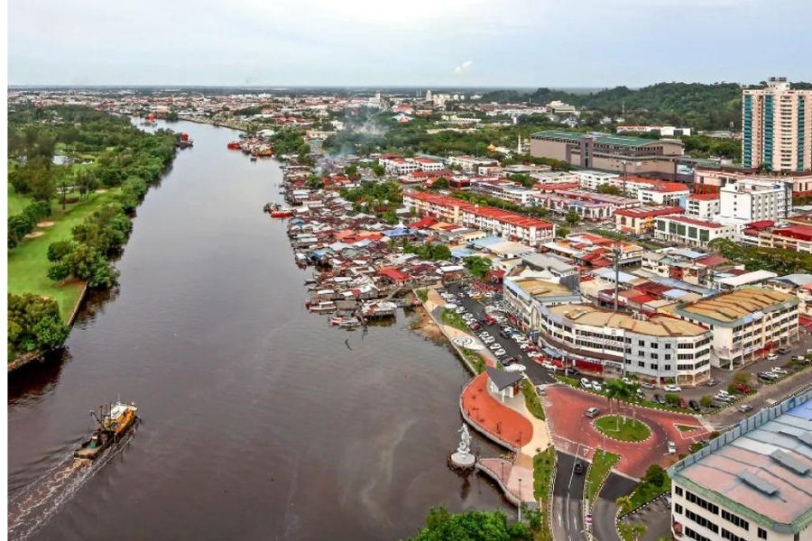
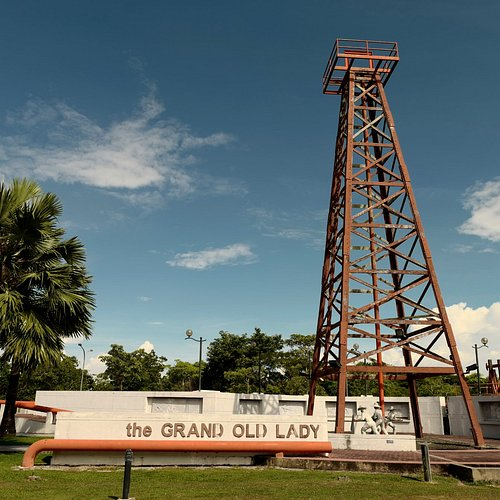
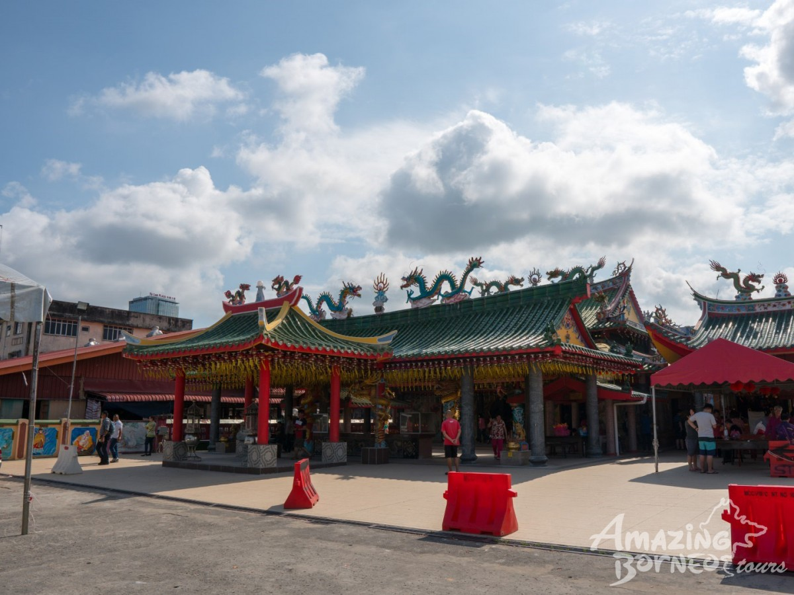

A PLACE I CALL HOME
My Hometown
Miri, Sarawak, Malaysia.

Welcome to Miri
Miri is my hometown, located in Sarawak, Malaysia. It is a place that holds many memories for me.
Growing up in Miri has been an important part of my life. Although I am now studying in Labuan, Miri will always be a special place that I call home.
A Little Look at Miri

Places in Miri

Scenery and Views
Home Is Always Special
No matter where I go, Miri will always be a meaningful part of my story. It is where my journey began.